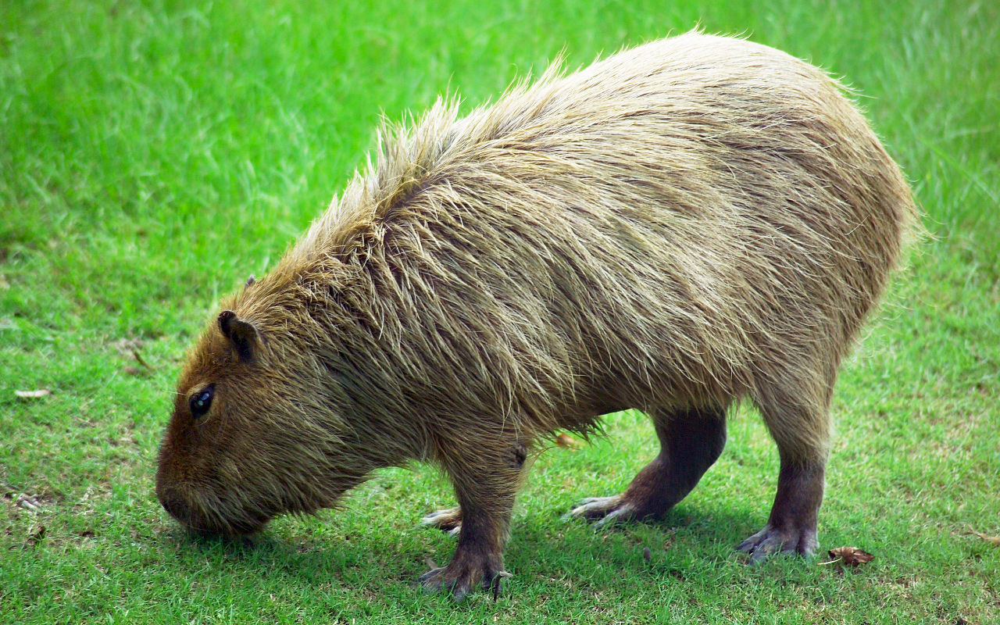
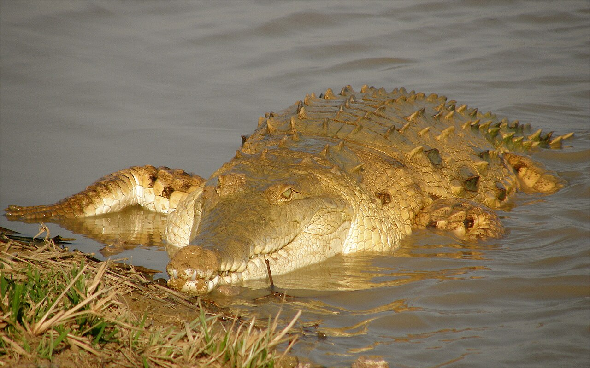

VENEZUELA'S GRASSLANDS WILDLIFE
CAPYBARA

The Capybara is the world's largest rodent and one of the most iconic residents of Venezuela's Los Llanos. Highly social animals, they live in herds of up to 100 individuals along riverbanks and flooded grasslands. Semi-aquatic by nature, capybaras are excellent swimmers and spend much of their day wallowing in water to cool off. Pups are born fully formed and can walk and swim within hours of birth.
ORINOCO CROCODILE

The Orinoco Crocodile is one of the largest and most critically endangered crocodilians in the world, found almost exclusively in Venezuela's Orinoco River basin. Adults can grow up to 6 meters in length, making them the largest predator in South America. Hatchlings emerge a bright yellowish-green before darkening with age. Once hunted to near extinction for their hides, conservation efforts in Venezuela have helped slowly rebuild their populations.
MANED WOLF

The Maned Wolf is neither a true wolf nor a fox but a unique canid of the South American savannas. With its striking reddish coat, long black legs, and tall black mane, it is one of the most elegant predators of the grasslands. Its long legs are an adaptation for seeing above the tall grass while hunting. Primarily an omnivore, it feeds on small animals, fruits, and insects, playing an important role as a seed disperser across the plains.
GREEN ANACONDA

The Green Anaconda is the heaviest snake in the world and one of the most formidable predators of Venezuela's wetlands and grasslands. Females can exceed 8 meters in length and weigh over 200 kilograms. Highly aquatic, anacondas are most at home in the shallow waters of Los Llanos, where they ambush prey as large as deer and caimans. Juveniles are born live in litters of up to 40, immediately independent from birth.